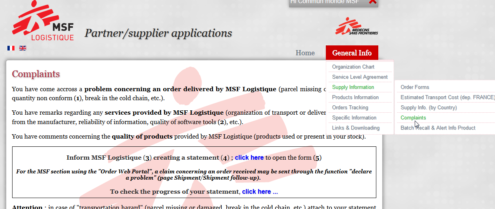
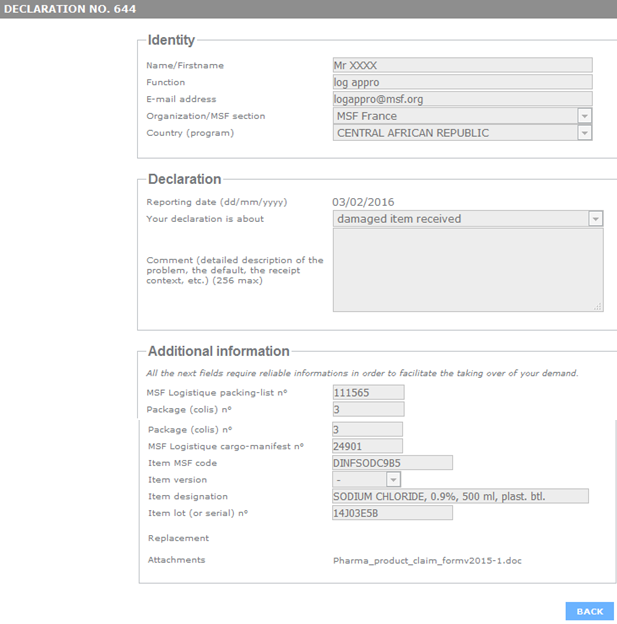
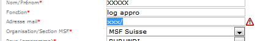
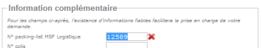
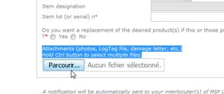
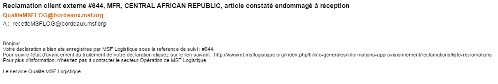
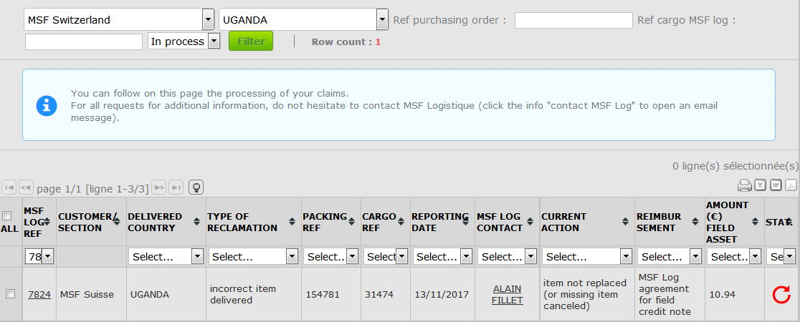

EN 2018 OCP MSF Log claim notice procedure

Association à but non lucratif
Non profit organisation
To facilitate your statements "field complaint" and to improve the monitoring of your declaration, MSF Logistique offers henceforth use the new features included in the page "Complaints” of our Website.
Below a user manual of these new features.
Users of the Order Web Portal must send a complaint directly from the page Shipment / Shipment follow-up of the Order Web (note that the current version of the page Shipment / Claim report follow up does not allow to follow the progress of your statement).
Nota : do not duplicate your statement on the page Complaints (MSF Log Website) and the Order Web Portal ….
For further information and/or suggestions, please contact your representative of the Operation Department or the Quality Department of MSF Logistique.
To create a complaint from the MSF Logistique Website
http://wwwop.msflogistique.org
username : msflogistique password : bordeaux
(page General Info / Supply Informations / Complaints)
1 Open (link) the form …

2 Fill up all sections of the statement form …
If your declaration concerns more than 2 packings of the same cargo : create a single registration (ref cargo) ; indicate in comment the concerned packings ...
If your declaration concerns more than 3 items of the same packing : create a single registration (ref packing) ; indicate in comment the concerned items ...

If your declaration relates to a damaged package : confirm (comment or attachment) the list/qty of non-usable items
=> ALERTE DETECTION INCOHERENCE DATAS
The information that has been entered does not meet the "Email address" format.

Data that has been entered does not exist in the MSF Logistique computing base..
If however you wish to confirm this information you need to inquire directly in the "comment" zone of the statement form.


=> To attach documents (Pdf, Jpeg, Itd, etc.) to your declaration …

1- create a folder on your desktop (with short name and no "special" characters like %, §, =, etc.).
2- group the documents (themselves with short name, and no "special" characters of type %, §, =, etc.) into the created folder.
3- zip the folder before attaching it to your declaration
3 Validate your déclaration …
(button BACK at the bottom of the form)
to send a notification to MSF Logistique.

4 Acknowledgment …
The receipt by MSF Logistique of your declaration will be confirmed by an Email message "acknowledged" specifying the MSF Logistique monitoring ref.

Nota : he validation of your declaration will generate the creation of an online "monitoring progress" in the "Complaints" page of the MSF Logistique website (see point 4).
To track the progress of your statement from the MSF Logistique Website
(page General Info / Supply Informations / Complaints)
5 Open (link) the "tracking progress page"
6 To check the progress of your statement
Search by “section” & “country” or “Ref purchasing order” or “ref cargo MSF Log”
Or periode (in process)
& filter to recover the outstanding amount of your statements

ALL = to select the list of all the declarations (or one line) for export (Excel, Pdf, etc.).
MSF LOG REF = MSF Logistique follow up ref. of your statement.
Click on the registration number, to open your statement ...
CURRENT ACTION = information about progress statement
REIMBURSEMENT = MSF Logistique decision concerning a customer credit note (damage reimbursement).
AMOUNT (€) FIELD ASSET = amount in Euro of the credit note.
STA = progress report
 => pending processing
=> pending processing
 => closed
=> closed
Theses information are indicative and are updated in "real time" by the Service Quality of MSF Logistique.